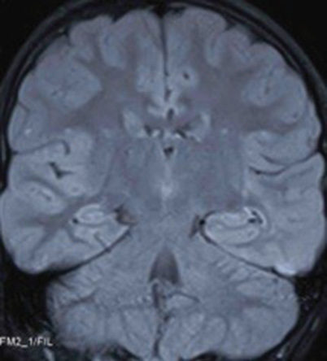
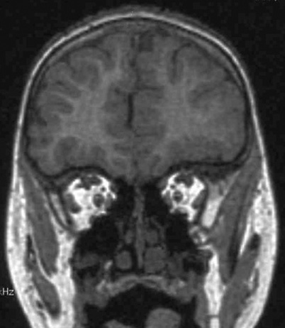
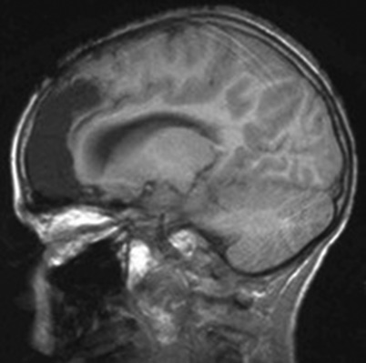
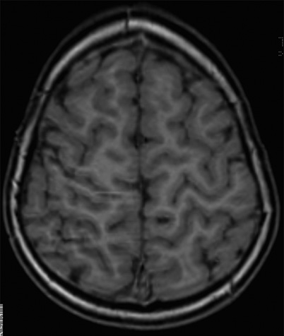
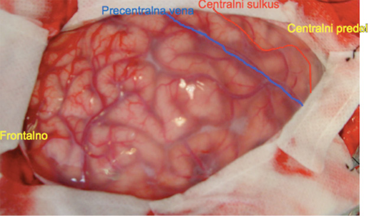
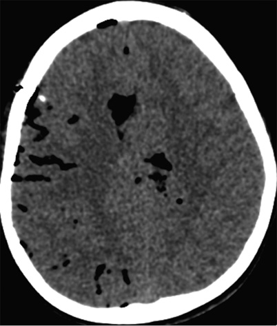
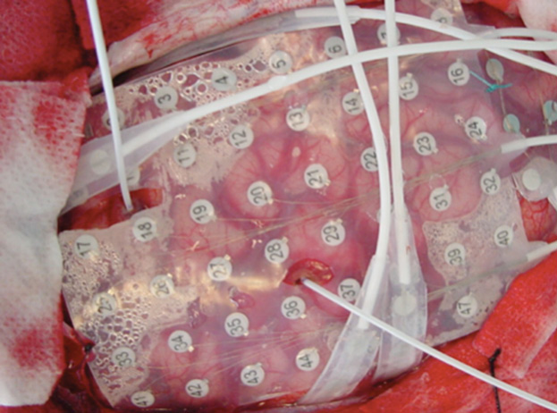

Kirurgija epilepsije pri otrocih
Epilepsy surgery in pediatric patients
Izvleček
Kirurgija epilepsije je veja funkcionalne nevrokirurgije, namenjena zdravljenju bolnikov s trdovratno epilepsijo. Vedno pogosteje jo uporabljamo tako pri pediatrični kot pri odrasli populaciji. Ker sta etiologija in klinična slika otroške epilepsije zelo heterogeni, je potrebno skrbno izbrati kandidate za kirurški poseg. Članek predstavlja pripravo bolnikov pred operacijo ter kirurške tehnike, ki jih uporabljamo pri zdravljenju epilepsije. Od različnih načinov vstavljanja intrakranialnih elektrod je najnatančnejša robotska stereoelekroencefalografija (SEEG). Med terapevtskimi posegi ločimo resekcije in prekinitvene posege. Pri hamartomih hipotalamusa najpogosteje uporabimo endoskopsko tehniko. Rezultati kirurškega zdravljenja so dobri. Približno dve tretjini otrok je po operaciji brez napadov, pri večini ostalih pa dosežemo izboljšanje.
Abstract
Epilepsy surgery is a branch of functional neurosurgery, developed for treating patients with resistant epilepsy in pediatric and adult population. The etiology and clinical picture of pediatric epilepsy are very heterogeneous and patients who could benefit from surgery should be chosen very carefully. In this article we present preoperative preparation of epilepsy patients, as well as surgical techniques used in pediatric epilepsy surgery. Robotic stereoelectroencephalography (SEEG) is the most precise technique used for implanting intracranial electrodes. Epileptic foci can be excluded by resection or disconnection procedures. Hypothalamic hamartomas are most frequently treated endoscopically. The results of surgical treatment are good: about two thirds of children are seizure-free after surgery while in the rest of them we mostly achieve improvement.
1 Uvod
Kirurgija epilepsije je funkcionalna kirurgija, katere namen je odstraniti epileptogeno področje možganov. V ožjem smislu h kirurgiji epilepsije ne prištevamo kirurgije tumorjev, ki povzročajo epileptične napade. Robove epileptogenega področja in količino možganskega tkiva, ki ga nevrokirurg odstrani, določimo s pomočjo površinskega in globokega elektroencefalografskega (EEG) snemanja. Ob tem uporabljamo natančne magnetnoresonančne posnetke (MRI), s katerimi si dobro prikažemo morebitne strukturne nenormalnosti, mejo med belo in sivo možganovino ter možgansko žilje. V pomoč pri iskanju epileptogenega področja sta tudi funkcionalni slikovni metodi pozitronska izsevna tomografija (PET) in enofotonska izsevna računalniška tomografija (SPECT). Epileptogeno področje mora biti kirurško dosegljivo, njegova odstranitev pa ne sme povzročiti novih nevroloških izpadov. Rezultati kirurgije so močno odvisni od izbire bolnikov, zato je potrebno pri vsakem bolniku skrbno pretehtati kirurške indikacije. Ob primerno izbranih bolnikih je uspešnost kirurškega posega velika (1-5).
Epilepsija je ena najpogostejših nevroloških motenj tako v odraslem kot v otroškem obdobju. Ob ocenjeni prevalenci 1 % za celotno populacijo v Sloveniji pričakujemo približno 20.000 bolnikov z epilepsijo, od teh 15.000 z aktivno epilepsijo. Skoraj polovica bolnikov zboli že v otroštvu. V Sloveniji je prevalenca pri populaciji do 19 let 0,46 % (6). Primarno zdravljenje epilepsije je farmakološko. Uspešno je pri približno dveh tretjinah bolnikov, pri 20–30 % bolnikov pa lahko pričakujemo trdovraten potek. O trdovratni (na zdravila odporni) epilepsiji govorimo, kadar ima bolnik še vedno napade kljub zdravljenju z vsaj dvema ustrezno izbranima protiepileptičnima zdraviloma v monoterapiji ali v kombinaciji (7).
V skupini bolnikov s trdovratno epilepsijo je potrebno iskati tiste, ki jim lahko pomagamo z drugimi načini zdravljenja, predvsem s kirurgijo. Pri tem je ključno znanje pediatričnega nevrologa (ali nevrologa, ki obravnava odrasle), ki bolnika z aktivno epilepsijo zgodaj prepozna in usmeri k epileptologu. Ta oceni možnost kirurškega zdravljenja in bolnika čimprej napoti na potrebne predkirurške preiskave. Hitra usmeritev v predkirurški program je pomembna, saj aktivna epilepsija povzroča številne zdravstvene, socialne in kognitivne primanjkljaje, zlasti v zgodnjem otroškem obdobju (8,9,10).
V predkirurškem programu je pomembna natančna analiza bolnikovih napadov (semiologija) z dolgotrajnim beleženjem napadov z video-EEG. Z nevroradiološkimi preiskavami ugotavljamo prisotnost morebitnih strukturnih (lezijskih) sprememb, povezanih z napadi, ali funkcijskih sprememb pri bolnikih brez lezij. Nevrološki pregled omogoča ugotavljanje pridruženih nevroloških nenormalnosti. V timu je nujno sodelovanje nevropsihologa, pogosto pa tudi psihiatra. Ugotavljamo skladnost ugotovitev različnih preiskav in morebitne zadržke. Vodi nas pravilo, da je vsak bolnik s trdovratno epilepsijo morebitni kirurški kandidat vse dotlej, dokler nismo s poglobljenimi preiskavami te možnosti ovrgli. Posameznega bolnika je ob neugodnem poteku epilepsije smiselno ovrednotiti večkrat. Kirurška obravnava poteka v epileptološki kirurški enoti, kamor kandidat pride po vseh prej opravljenih preiskavah.
Indikacija za kirurški poseg je predvsem trdovratna žariščna epilepsija z jasno strukturno spremembo ali celo brez nje. Redkeje se za kirurško zdravljenje odločimo pri nekaterih epileptičnih sindromih s primarno generaliziranimi napadi, predvsem, da bi ublažili napade in njihove posledice (npr. nenadni padci). Pri odločitvi za kirurško zdravljenje epilepsije nista pomembni le pogostnost in oblika napadov, ampak tudi breme z EEG izražene epileptiformne nenormalnosti v času, ko ni napadov.
Pri nekaterih epileptičnih sindromih v otroštvu (infantilni spazmi, sindrom električnega epileptičnega statusa v spanju, Landau-Kleffnerjev sindrom in drugi) je lahko potek trdovratne epilepsije encefalopatski. Epileptični napadi so lahko za bolnika in njegovo okolico le malo moteči, toda breme nenormalnosti je tako izrazito, da povzroča encefalopatijo. Pridružen zastoj v otrokovem razvoju ali celo upad razvoja včasih poteka zelo hitro. Zato je lahko že sam po sebi (ne glede na aktivnost epilepsije) indikacija za napotitev na kirurško zdravljenje.
Posebnost kirurgije epilepsije pri otrocih je povezana z zorenjem možganov. Zgodnja epilepsija, ki zajema govorna področja možganov, pričakovano povzroča motnjo v primarnem razvoju govora. Pri pojavu epilepsije v govornih področjih v kasnejšem obdobju razvoja pa lahko zaznamo sekundarni upad že razvitih govornih sposobnosti, kar opažamo na primer pri sindromu epileptične afazije Landau-Kleffner. Če pride do prizadetosti govornega področja zgodaj v otrokovem razvoju, se zaradi plastičnosti ali ekvipotencialnosti govor lahko razvije v simetričnih kontralateralnih področjih možganov (11,12). Do podobnih preoblikovanj prihaja tudi pri drugih kognitivnih in celo motoričnih funkcijah. Rezultati študije na populaciji 70 otrok, pri katerih je bila narejena hemisferotomija, kažejo, da sta sposobnost za socializacijo in razvoj možganskih funkcij obratno sorazmerna s starostjo otroka v času operacije (13).
2 Preiskave pred operacijo
Pred načrtovanjem morebitnega kirurškega zdravljenja je potrebno opraviti preiskave, s katerimi želimo potrditi hipotezo o mestu epileptogenega žarišča (ali več žarišč) in etiologiji epilepsije.
2.1 Umeščenost epileptogenih žarišč
Epileptogeno žarišče sestavljajo del možganske skorje, kjer prihaja do nenormalnega proženja impulzov, in deli skorje, kamor se ti impulzi širijo neposredno po pričetku napada. Opredelitev žarišča temelji na dolgotrajnem (običajno 2–14 dni in noči) neprekinjenem površinskem video-EEG beleženju, med katerim ugotavljamo elektro-klinične in topografske korelacije v času poteka epileptičnega napada. Elektrode, navadno 10–20, namestimo na skalpu po mednarodni shemi. Pomembno je dovolj veliko število elektrod (tudi pri dojenčkih). Včasih so koristne še dodatne elektrode nad določenimi regijami. Preiskovanca v času napada usmerjeno testiramo po dogovorjenih protokolih, ki so prilagojeni tudi malim otrokom. Ugotavljamo začetne znake napada ter nevrološke primanjkljaje med napadom in po njem (14,15).
Pri nekaterih epilepsijah senčnega režnja lahko vstavimo elektrode v hipokampalne strukture preko foramna ovale. Tako povečamo možnost ugotavljanja nenormalnosti, ki jih zaradi orientacije dipola v globoko ležečih medialnih temporalnih strukturah s površinskimi elektrodami lahko zgrešimo (16).
Video-EEG beleženje mora vsaj eno noč potekati tudi v spanju, saj je spanje eden možnih sprožilcev napadov ali pa celo edino obdobje, ko se izrazi epileptiformna nenormalnost. Nočno beleženje omogoča tudi oceno fiziološke strukture spanja in morebitnih subtilnih napadov v spanju, ki jih okolica pogosto ne zazna. V pomoč je lahko uporaba programov za avtomatsko zaznavanje napadov, ki omogočajo vrednotenje morebitnih subkliničnih napadov. Verjetnost, da se pojavi napad pri bolnikih, ki imajo manj pogoste napade, lahko povečamo z aktivacijskimi metodami, kot so odtegnitev spanja, hiperventilacija, svetlobno draženje in odtegnitev protiepileptičnih zdravil. Prisotnost staršev ali spremljevalca, ki dobro pozna otrokove običajne (habitualne) napade, osebju omogoča takojšnje prepoznavanje pričetka napada, dobro testiranje in realno analizo dogodkov. Pri pojavljanju različnih oblik napadov pri istem bolniku moramo posneti in opredeliti vse vrste napadov.
2.2 Opredelitev etiologije
Opredelitev etiologije temelji na natančni anamnezi in kliničnem pregledu s poudarkom na nevrološkem pregledu, ki vključuje tudi iskanje morebitnih kožnih sprememb. Pomembna je analiza nevroradioloških preiskav (17). Če otrok med slikovno preiskavo ne zmore sodelovati, jo opravimo v splošni anesteziji. Strukturne nenormalnosti so lahko jasno izražene (hemimegalencefalija, omejene malformacije kortikalnega razvoja, nekateri razvojni tumorji), lahko pa so diskretne (zadebljen girus, zabrisanost meje med sivo in belo možganovino, zmanjšanje volumna v določenem predelu) (Sliki 1 in Sliki 2


V zadnjih letih pri oceni funkcij možganske skorje vse več uporabljamo tudi funkcijsko magnetnoresonančno preiskavo (fMR). Ta preiskava zahteva sodelujočega preiskovanca, ki mora biti že pred preiskavo pripravljen na izvedbo testnega protokola.
3 Kirurške tehnike
Ločimo med kurativnimi in paliativnimi tehnikami. Izbor tehnike je odvisen od položaja in velikosti epileptogenega žarišča. Med kurativnimi tehnikami uporabljamo predvsem resekcije epileptogenega žarišča in prekinitvene posege, ki lahko v skrajni obliki zajemajo tudi celotno hemisfero.
3.1 Možganske resekcije
Pri možganskih resekcijah gre za izrez epileptogenega žarišča. Ločimo enostavne resekcije in resekcije, povezane z intrakranialno eksploracijo.

Vstavimo lahko
3.1.1 Stereoelektroencefalografija (SEEG)
Globoke intracerebralne elektrode vstavimo v anatomske strukture, ki smo jih že s kirurškimi preiskavami določili kot najverjetnejše epileptogene regije. Pri starejši tehniki SEEG, ki sta jo Bancaud in Talairach razvila za odrasle bolnike, sta za določitev tarčnih anatomskih struktur uporabljala stereotaktični okvir in arteriografsko preiskavo (18). Danes nam MRI in robot omogočata, da se izognemo tako arteriografski preiskavi kot tudi neprijetnemu stereotaktičnemu okviru. Med posegom vstavimo 10–20 tankih žičnatih elektrod po prej pripravljeni shemi (Slika 4). Za vsako elektrodo naredimo majhno trepanacijsko vrtino, skoznjo vstavimo elektrodo in jo s posebnim navojem privijemo na lobanjo. Elektrode lahko pustimo na mestu do dva tedna (Slika 5), resekcijo epileptogenega področja pa ponavadi izvedemo 2–3 mesece po odstranitvi elektrod.
V zadnjem času se je razvila t. i. termokoagulacijska metoda, pri kateri s pomočjo že vstavljene globoke elektrode izvedemo termokoagulacijo ozke plasti možganskega tkiva v nesposredni bližini elektrode. Pri tem uporabljamo tokove, ki so višji kot ob stimulaciji pri kartiranju možganske skorje. V nekaterih primerih lahko le s termokoagulacijo zmanjšamo epileptogenost določenega predela in se tako izognemo kasnejši resekciji epileptogenega tkiva (Slika 6).

Z globokimi elektrodami lahko za razliko od ploščatih elektrod zelo dobro eksploriramo tudi senčni reženj in medialne možganske strukture. Pri otrocih, mlajših od dveh let, te tehnike ne uporabljamo, saj debelina lobanje ne omogoča zanesljivo pritrditi elektrode.
3.1.2 Vstavitev intrakranialnih elektrod s kraniotomijo
Ta metoda je izvedljiva tudi pri najmlajših bolnikih. Vstavljamo ploščate subduralne elektrode, ki omogočajo eksploracijo površine možganske skorje (Sliki 7 in Slika 8). V zelo redkih primerih na ta način vstavljamo globoke intracerebralne elektrode. Ploščate elektrode omogočajo dokaj natančno kartiranje senzoričnih, motoričnih in govornih področij možganske skorje (19). Možgansko skorjo dražimo z vlaki dražljajev ali s posameznimi dražljaji ob hitri frekvenci (50 Hz) in z naraščajočo jakostjo. Za umestitev govorne regije ponavadi uporabljamo 5 sekund dolge vlake dražljajev, ob tem ko bolnik glasno šteje. Stimulacija govornega področja povzroči zaustavitev ali spremembo govora. Za umestitev senzoričnih in motoričnih področij uporabljamo posamezne dražljaje ali pa 3 sekunde dolge vlake dražljajev. Odgovor opazujemo na nasprotni strani stimulacije kot kontrakcijo določenih mišičnih skupin ali kot parestezije. Razdalja med dvema stimulacijskima elektrodama mora biti približno 1 cm. Ploščate elektrode pustimo na mestu 5–10 dni, ob odstranitvi elektrod pa tudi izrežemo epileptogeno področje.


Odločitev za eno ali drugo metodo je odvisna od kirurške šole pa tudi od starosti bolnika in topografije epileptogenega žarišča. Intrakranialno snemanje epileptičnih napadov in določanje funkcionalnih področij možganske skorje nam omogočata, da natančno opredelimo robove epileptogenega področja, hkrati pa se izognemo nevrološkim izpadom po operaciji.
3.2 Prekinitveni posegi
Hemisferotomija je prekinitev aferentnih poti ene hemisfere, ob čemer ohranimo hemisferno žilje (20,21). Povezava med hemisferama je v celoti prekinjena, ostane pa nekaj eferentnih vlaken. Tehniko uporabljamo namesto odstranitve hemisfere (hemisferektomije), pri kateri ostane v duri nekrotično področje, v katerem zaradi presežka likvorja pogosto prihaja do zapletov. Hemisferotomija je na mestu, kadar epilepsija prizadene celotno hemisfero, ki ni več funkcionalna. Primanjkljaj pred operacijo (hemiplegija, hemianopsija) se po posegu le malo poslabša ali pa ostane nespremenjen, sposobnost hoje pa se ohrani. Pomembno je, da ohranimo unilateralno naravo morebitnih preostalih epileptičnih napadov ter funkcionalno integriteto hemisfere na nasprotni strani.
Možne so tudi manjše, bolj omejene prekinitvene operacije z namenom ohraniti funkcionalnost centralne regije. Pri razširjeni, vendar nepopolni prizadetosti hemisfere lahko prekinemo aferentno in eferentno nitje večine poloble, ohranimo pa manjše neprizadeto področje možganov.
3.3 Kirurgija hamartomov hipotalamusa
Hamartomi hipotalamusa so prirojene nevronske malformacije, ki se nahajajo v področju diencefalona (hipotalamus in tubercula mamilaria). Pogosto povzročajo trdovratno epilepsijo z različnimi oblikami napadov, z značilnimi gelastičimi (smejalnimi) komponentami in encefalopatskim potekom (22,23). Lahko so povezani s prezgodnjo puberteto. Kirurško zdravljenje hamartomov je zahtevno zaradi bližine možganskega debla. Za prekinitev nitja hamartoma največkrat uporabljamo endoskopsko, redkeje pa klasično mikrokirurško tehniko (24). Možna je tudi radiokirurška ablacija (25).
3.4 Paliativni kirurški posegi
Njihov namen je s prekinitvijo povezav omejiti širjenje epileptičnih napadov.
3.5 Stimulacija vagusnega živca (SVŽ)
SVŽ so v začetku odobrili kot dopolnilno terapevtsko metodo za zdravljenje trdovratnih žariščnih napadov pri odraslih in otrocih nad 12 let starosti. Kasneje so jo začeli uporabljati tudi pri mlajših otrocih (31). Dvojno slepih poskusov sicer niso nikoli opravili, do zmanjšanja frekvence napadov pa naj bi prišlo pri približno polovici bolnikov (32,33). Mehanizem delovanja SVŽ ni jasen. Kratkotrajno gre najverjetneje za vpliv na sinhronizacijo možganske električne aktivnosti preko jedra nucleus tractus solitarius. Dolgotrajno delovanje spremeni koncentracijo nevrotransmiterjev. Povečana aktivnost noradrenalinskih in serotoninskih poti naj bi zviševala prag za napade (33).
3.6 Globoka možganska stimulacija
Čeprav je ta metoda uveljavljena predvsem na področju zdravljenja motenj gibanja, potekajo tudi številni poskusi za zdravljenja epilepsije s stimuliranjem globokih možganskih jeder. Uporabljene tarče so amigdala, hipokampus, subtalamično jedro, sprednje in centromediano jedro talamusa, cerebelum in glava nucleusa caudatusa. V randominizirani, dvojno slepi multicentrični študiji se je ob stimulaciji sprednjega jedra talamusa pri 56 % od 110 bolnikov zmanjšalo število napadov (34). Omeniti velja, da so bili v Sloveniji že pred 30 leti opravljeni prvi poskusi zdravljenja (mladih odraslih) bolnikov z epilepsijo s cerebelarno stimulacijo (35).
4 Indikacije in kontraindikacije v različnih starostnih skupinah
Pri odločitvi za kirurški poseg razlikujemo med različnimi starostnimi skupinami otrok: dojenčki (do 1 leta), malčki (do 3 let), otroci (3–10 let) ter mladostniki (do 16 let). V različnih starostnih skupinah je etiologija epilepsije različna.
Pri dojenčkih so najpogostejši vzrok napadov možganske malformacije (displazije, hemimegalencefalija). Ganglionevronski tumorji so redki. V večini primerov gre za hude in zelo pogoste napade, ki se lahko pričnejo že pred dopolnjenim prvim mesecem starosti in se pojavljajo večkrat dnevno. Najpogostejši poseg, ki ga izvajamo v tej starostni skupini, je hemisferotomija. Resekcije žarišč so šele na drugem mestu. Vzrok za radikalni pristop je velika in zgodnja epileptogenost hemisfernih možganskih malformacij.
V starostni skupini do treh let so najpogostejši vzrok za epilepsijo kortikalne spremembe (kortikalna displazija), na drugem mestu pa so nevronski in glialni tumorji, ki povzročajo epilepsijo. Najpogosteje izvajani poseg je resekcija žarišča. Namen teh resekcij je popolen izrez epileptogenega žarišča, zato je pogosto potrebna intrakranialna eksploracija. Izjema so nekatere epilepsije senčnega režnja in lokalizirane oblike sindroma Sturge-Weber. Hemisferotomije pri malčkih izvajamo pri obsežnih kortikalnih displazijah.
Pri starejših otrocih se najpogosteje odločimo za resekcije žarišč. Izjema je Rasmussenov encefalitis, ki je pri prizadetosti le ene poloble velikih možganov dobra indikacija za hemisferotomijo. Rasmussenov encefalitis se pogosteje pojavlja po dopolnjenem tretjem letu starosti, srednja starost bolnikov je šest let.
Previdnost velja pri nelezijskih epilepsijah, pri katerih je za jasno opredelitev skladnosti rezultatov MRI in EEG preiskav največkrat potrebna invazivna predkiruška diagnostika (36). Pri večžariščnih epilepsijah načeloma ne izvajamo resekcij, čeprav v nekaterih primerih (tuberozna skleroza) resekcija najaktivnejšega žarišča lahko izboljša stanje (1).
5 Rezultati kirurškega zdravljenja
V povprečju približno dve tretjini bolnikov po operaciji nima več napadov. Paolicchi in Jayakar v skupini 75 bolnikov, mlajših od 12 let, poročata o 59 % operiranih, ki so bili

6 Stanje v Sloveniji
V Sloveniji zagotavljamo predkirurško diagnostiko, ne izvajamo pa kirurgije epilepsije. Tako otroke kot odrasle bolnike z epilepsijo, ki so kandidati za kirurško zdravljenje, po obravnavi v izkušenem epileptološkem timu usmerjamo v posebej specializirane epileptološke kirurške centre v tujino. Številne bolnike, za katere je še nedavno veljalo, da niso primerni kandidati za zdravljenje z operacijo, danes uspešno operirajo (37-40). Glede na to, da je kirurgija epilepsije veja nevrokirurgije, ki se zaradi novih diagnostičnih in kirurških metod hitro razvija, lahko v prihodnosti pričakujemo še dodaten porast indikacij.
7 Zaključek
Kirurgija trdovratne epilepsije pri otrocih je izvedljiva s sprejemljivo obolevnostjo in s prenehanjem epileptičnih napadov pri približno dveh tretjinah bolnikov, pri večini drugih pa z zmanjšanjem pogostnosti ali s spremembo oblike napadov. Kirurški zapleti so redki in najpogosteje prehodni